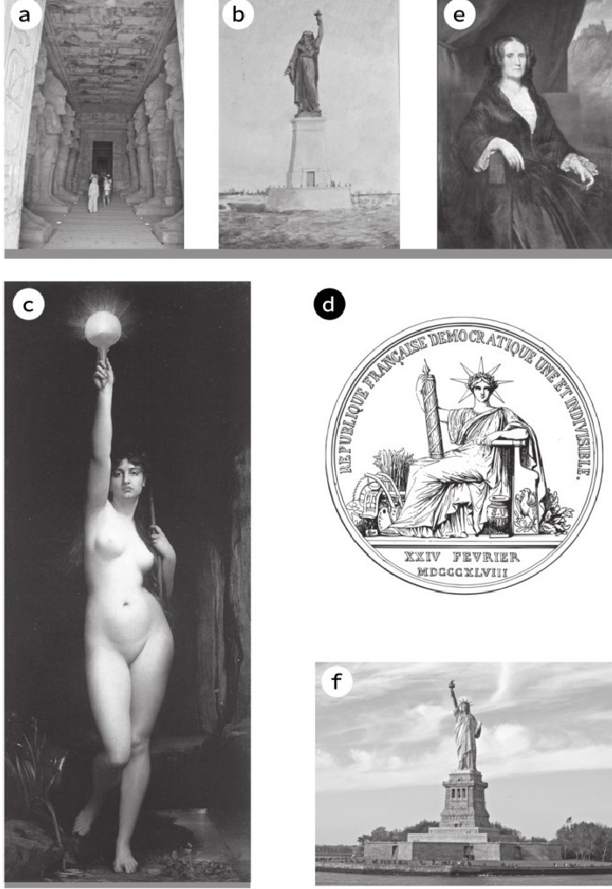
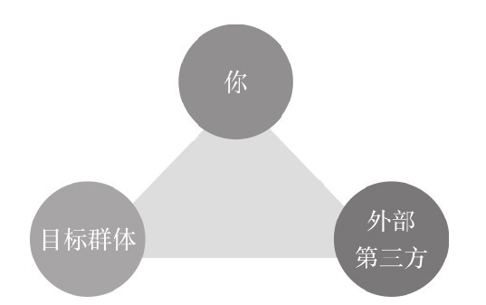
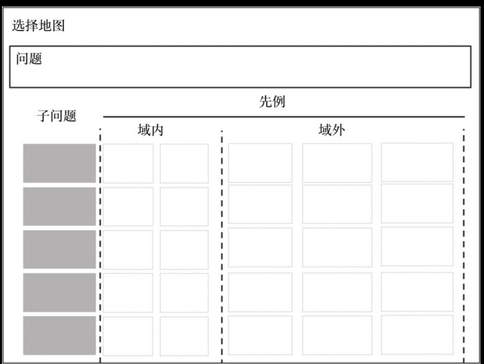

title: "大思维：我们如何创造与革新" status: public date: 2025-08-02
大思维：我们如何创造与革新
[!TIP]
阅读时间： 2025年7月
作者：希娜·艾扬格
今年工作重心变成了几乎纯技术方向，负责的题目是为系统提供基础的软件框架服务。
做得非常艰难。一切又像是天意，大老板的季度说明会上，推荐了这本英文名叫做《Think Bigger》的书。从题目看，冥冥之中是指引我如何我目前面临的问题。(p.s. 作者同时著有另外一本畅销书《选择的艺术》，也在我的书单上)。以下是速读一遍的快速笔记：
一、创新是有方法和路径的
首先，作者引用坐落在曼哈顿码头自由女神像的例子，阐述了创新并非凭空出现，不是某个天才突发奇想的灵感；而是一切都是基于创新作者自己或者他人碎片化的创意、想法，产生的奇妙组合。如图，自由女神像的创作巴托尔迪分别从以下作品产生灵感：
- a. 古埃及的巨型墓葬雕塑
- b. 巴托尔迪本人的《埃及之光照耀亚洲》水彩画
- c. 儒勒·列斐伏尔创作的布面油画《真理女神》
- d. 一枚5法郎银币背面的罗马自由女神
- e. 巴托尔迪本人母亲的肖像

与此同时，作者还举了不同时期毕加索的画像风格的例子，阐述了毕加索印象派风格的形成，也是借鉴他人好的创意形成的有效组合。
书中引用法国数学家庞加莱的一句话：
“发明在于避免构建无用的组合，在于构建为数不多的有用组合……发明就是辨别，就是选择。”
所谓大思维就像是如何利用已有知识组合产生新的创意的 SOP。也是接下来笔者本人希望借鉴和实践，希望可以解决自己目前面临的问题。
简言之，利用大思维进行创新由以下六个步骤组成：
- 选择问题
- 分解问题
- 比较需求
- 在框内和框外搜索
- 构建选择地图
- 第三只眼测试
本章的第2部分，作者阐述了以下几个与创新相关的研究结果，用于支撑大思维六个步骤的具体阐述：
- 科学研究表明，人并没有左脑分析型或者右脑创意型之分。富有创造力的人和其他人的差异也许并不在左右脑的差异。
[!NOTE]
P.S. 笔者认为人的智力差异是存在的，但是认同者不代表天才之外的人无法创新
- 在创新的过程中，一个重要且不可或缺的点是保持好奇心和毅力。
P.S. 笔者自觉本人毅力较差
- 头脑风暴并不能对创新起直接作用，其起的真正作用是从参与者的直接经验中汲取灵感，换句话说，这是一种信息共享和呈现。因为“快，帮我想个创意”只能催生出现有知识经验框架内的想法组合，这对解决非创新类问题是有效的
- 创造力的工作与周围环境无关，创新的工作环境只需要有一个独立思考的地方加上一个可以与他人随时相遇讨论的条件就好。
- 我们更有可能工作中思考中产生有价值的顿悟（相较于思绪漫游）。创新的创造性组合都是日常记忆碎片的延续。
- 在进行创新大思维的时候，尽量独自完成每一步。超过 5 人的团队思考创新结果往往拙劣于个人表现（所谓人多口杂，容易迷失。有些人也会倾向于沉默不语）。
- 不要有过多的方案选择，一般 5 个为佳（选择过多人会认知过载，产生迷失）
二、大思维六个步骤的具体解释
选择问题
“如果我有一个小时来解决一个问题，我会花55分钟思考问题，再花5分钟想出解决方案。 -- 爱因斯坦
- 一个好的问题应该是找到自己通过努力可以找到答案（可解决）的
- 写下问题是非常关键的，在你写下想法时，你实际上创造了你的想法 （因为这不免一定会有集中精力产生思考的过程）
作者提供了一种选择有意义问题的方法：
- 写下来自己能想到的想解决的所有问题
- 记录写下自己感兴趣的事情或者知识
- 找到自己日常关心的事情记录下来
做完以上三步后，会有一个长长的问题清单。缩小清单范围，在清单中重复出现的问题就是要集中精力优先解决的。
[!NOTE]
笔者认为：这应该只是你真的没有问题要解决时，需要做的步骤
创新就是新颖的、有用的东西。没人想用的创新不是创新。因此选择问题时需要避免“错误的”问题。
- 要解决的问题可能是个陈述句，需要可以把它变成 How？的问题，这样会触发思考
- 对问题的陈述应该要足够开放，而不要在问题中预设条件（相当于暗示了解决问题的方案）
- 人本身能力范围也是有限的，所以定义正确的问题是自己可以解决且有动力解决的。可以通过层次分析（step analysis）来扩大或者缩小范围找到对的问题
- 层次分析思考的过程也是找到解决问题途径的一种方式
这里最重要的是”你必须对一个想法、一个问题或一个你想要纠正的错误充满激情。如果你从一开始就没有足够的激情，你就永远无法坚持下去“。
分解问题
- 主问题需要分解为子问题，解决了每一个子问题之后，主问题就迎刃而解。
- 分解问题或者子问题不言自明切忌急于求成，深思熟虑，掌握大局观
自己有点急于求成。原因还是没有毅力。
- 分解子问题采用 MECE 原则（Mutual Exclusive 和 Comprehensive Exhasutive）
- 分解子问题尽量列举越长越好的清单，保留最吸引自己的问题（删除无关紧要的问题），保留 4、5 个问题即好。
- 跟不同人确定回答子问题问题是否足以解决原问题（不同角度的人会受到自己所知情况的束缚）。
- 可以请专家对分解的问题提出意见（要一对一讨论）
- 可以跟用户了解实际体验，想法及感受
- 跟没有在领域的人讨论。尽可能让其沉浸在对应领域，询问他们的想法（例如，书中盲人旅行的例子。跟普通人询问，假设你看不见，会希望怎样出行）
- 分解问题不是一次分解就万事大吉了，需要不断修改，直到受访对象提供不了新的输入。
- “80%测试”：如果我解决了这些子问题，那么我是否至少解决了整个问题的80%
比较需求
比较需求的目的是为了确认这个问题是真的值得解决的。人都是带主观情感的，至少考虑并确定三类不同利益相关者的需求：
- 身为创新者的你:当我为我的问题创造理想的解决方案时，我想要什么样的感觉
- 目标群体: 当我解决这个问题时，我希望我的目标群体有什么感觉
- 第三方（竞争对手和盟友）: 当我解决这个问题时，我希望我的第三方(老板？)有什么感觉?
身为创新者的自己的需求是最重要的。
建立大局评分，目的是作为你的选择标准，作为确保你走在正确道路上的检查标准。这要发生在你产生出可选择的方案之前。

在框内和框外搜索
搜索的目的是找到每个子问题的解法。当你拆解出正确的子问题后，在领域内或者领域外都是有类似先例的：
- 领域内的最佳实践(谁过去成功解决过这个子问题？)
笔者认为：好像很自然，当然要参考先例。
-
领域外是否有成功的先例。进行域外搜索的诀窍是进行以下三种搜索：
- 不可知
- 平行
- 局部
作者举的一个问题例子是：我们如何激励孩子学习数学？而其搜索的三个问题是：
- 不可知：我们如何激励孩子学习？
- 局部：我们如何激励孩子去做某件不令人兴奋的事呢？
- 平行：我们如何激励孩子吃健康食物？
领域外搜索的一个例子就是好莱坞女演员海蒂·拉玛借鉴自动钢琴原理发明了通信领域的跳频技术。
笔者注：就像查理芒格不断强调的“运用多学科思维”。
笔者认为，无论域内域外搜索，即使身边没有专家，搜索引擎不容易直接找到答案。现在有了 AI 大模型加持之，域内域外搜索应该变得更加容易。
-
对每种策略，重点在于要有证据证明其优点。
-
参考借鉴也是“策略性复制”，并不是复制全部。
书中提到，需要关注旧的想法，是因为新事物来的并没有那么快。那些被评判最有创意的想法都是平衡了熟悉度和新颖性的想法。
个人认为：其实很多想法是受限于当时的技术条件没能实现。进一步讲，我们并没有比古人更聪明，我们现代社会发展到这种程度也是所有历史经验的积累，也是因为我们站在了巨人的肩膀上。包括现在很多技术，也被称为新瓶装旧酒，其实也是对旧想法的借鉴。
使用创意协助来拓宽思路：可以通过和人一对一请教，直接提出你的问题。关键是需要注意如何结束与每个人的谈话。

构建选择地图
- 选择地图的目的是构建为数不多的有用组合，不要假设某些组合无法搭配使用
- 要慢慢来 不要急。实验证明多次思考往往在第二轮思考新颖创意最多
- 刻意施加创意要求 往往增加无形压力而适得其反。创意等于已存方案的有效组合恰好减轻了这种压力
- 保持开放心态 才能更多的域外搜索
- 如何组合策略？随机，至少产生三种有用组合，并对齐产生大局评分
笔者认为这就像是撞大运
第三只眼测试
- 第三只眼测试的目的不是为了说服，也不是为了获取潜在支持。是为了接受反馈，改进想法。
- 除了接受他人的反馈，也需要自己几下想法，不断的复述，自我思考重复。目的是在复述过程中完善想法（说、听、想结合）。
- 与领域内专家讨论，提问（可行与不可行部分，如何改进）。讨论后立即分析谈话，查漏补缺